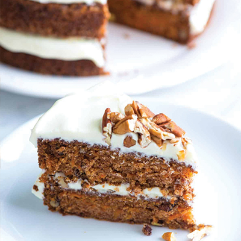

"La gastronomie, c'est l'art d'utiliser la nourriture pour créer le bonheur." Theodore Zeldin
SUIVEZ-MOI
Le Carott Cake
Hello, aujourd'hui, je vais vous montrer comment faire un gâteau que vous connaissez sûrement tous, Le Carott Cake, c'est une recette très populaire aux Etats-Unis et au Royaume-Uni, ainsi qu'en France depuis quelques années qui peut un peu changer en fonction du pays. J'espère que vous aimerez !
Ingrédients (pour 10/12 personnes) :
Cuisson : 40 minutes
- 250 g de farine
- 2 cuil. à café de bicarbonate de soude
- 1/2 cuil. à café de sel
- 2 cuil. à café de cannelle moulu
- 3 gros oeufs
- 200g de sucre
- 120g de sucre vergeoise brun
- 18 cl d’huile végétale
- 18 cl de lait
- 2 cuil. à café d’extrait de vanille
- 180g de carottes râpées
- 125g de noix ou noix de pécan, grossièrement hâchées
- 224g de fromage frais type Philadelphia, à température ambiante
- 115g de beurre doux ramolli
- 240 – 300g de sucre glace
- 2 cuil. à soupe de crème fraîche épaisse
- 2 cuil. à café d’extrait de vanille
- 1 pincée de sel
Etapes à suivre :
- Dans un grand saladier, battre ensemble les oeufs, les sucres, l’huile et le buttermilk ensemble à l’aide d’un batteur électrique à vitesse moyenne, jusqu’à l’obtention d’une consistence lisse. Notez que vous pouvez réaliser votre buttermilk maison : il suffit de verser une cuillère à soupe de jus de citron frais dans votre verre doseur, puis compléter avec du lait jusqu’à atteindre les 18 cl sur le verre doseur. Bien mélanger puis réserver pendant 5 minutes avant utilisation.
- Ajouter la farine, puis battre à vitesse lente, jusqu’à incorporation totale.
- Faire chauffer une poêle (de préférence anti-adhésive, sinon utiliser du beurre pour la cuisson) et y verser une louche de pâte et laisser cuire à feu moyen.
- Incorporer les carottes râpées et les noix grossièrement hâchées. Bien mélanger.
- Verser la préparation dans le moule à gâteau puis enfourner pendant 30 à 40 minutes à 180°C. Une lame de couteau placée en son centre doit ressortir complètement propre.
- Pendant ce temps, préparer le glaçage : à l’aide d’un batteur électrique, mélanger ensemble le philadelphia et le beurre, tous deux à température ambiante (les sortir au moins deux heures à l’avance), jusqu’à l’obtention d’une consistence crémeuse. Ajouter le sucre glace et mélanger jusqu’à ce qu’à incorporation totale et jusau’à ce que l’ensemble s’épaississe. Verser la crème fraîche épaisse, l’extrait de vanille, et mélanger encore 2 minutes à vitesse moyenne. Ajouter davantage de sucre glace si la consistence n’est pas assez épaisse. Verser une pincée de sel pour couper un peu le goût sucré, puis réserver au réfrigérateur jusqu’à utilisation.
- Laisser le gâteau refroidir complètement avant de le recouvrir de glaçage sur le dessus et les côtés. Une option consiste également à le découper en 2 dans le sens de la hauteur comme pour un layer cake et de garnir ainsi l’intérieur du gâteau avec un peu de glaçage, avant de le recouvrir completement sur le dessus et sur les parois extérieures.
- Décorer avec des nois de pécan grossièrement hâchées et quelques noix de pécan entières;
- Réserver le carrot cake au réfrigérateur pendant au moins 1 heure avant de le servir.